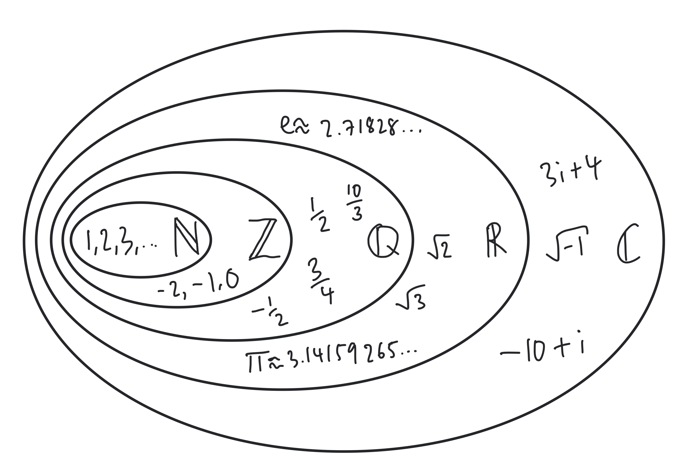

![]() Practice
with
your
knowledge
of
sets
with
these
questions:
Practice
with
your
knowledge
of
sets
with
these
questions:
This section looks at common notation used when writing mathematics using formal notation - read it now or come back to it once you’ve done a bit of real maths. You could even use it as a glossary, come back to it and look stuff up if you need to.
Sometimes looking at a piece of mathematics can feel like looking at another language. If you feel that way don’t worry, that’s normal. It’s worth remembering these things:
These symbols can turn up in mathematical explanations.
| symbol | meaning |
|---|---|
| \(\therefore\) | therefore |
| \(\because\) | because |
| \(\neq\) | not equal |
A set is a collection of elements (things). Sets are defined using curly brackets or braces \(\{\) and \(\}\). Capital letters are often used as names of sets. Here is the set of the first \(5\) multiples of \(3\) (the first \(5\) numbers in the \(3\) times table):
\[A = \{3,6,9,12,15\}\]
When sets are small it’s ok just to write down all the elements of the set. However if I wanted to write down all of the multiples of \(3\) I would be in trouble. This is when we use set builder notation and some new symbols.
\[B = \{ 3x | x \in \mathbb{N} \}\] This is read as: \(B\) is the set of \(3\) times \(x\) such that \(x\) is a natural number. We’ve added in a funny E, N and a line! Here’s what they mean:
| symbol | meaning |
|---|---|
| \(\in\) | is a member of the set |
| \(|\) | such that |
| \(\mathbb{N}\) | the natural numbers \(1,2,3,4...\) |
When reading this for the first time it is fine to try some values for \(x\) and see what you get. Explore the idea with pen and paper.
The table below contains common sets you may see. Each lower set contains the one above, i.e. the whole of \(\mathbb{N}\) is in \(\mathbb{Z}\).
| symbol | name | example |
|---|---|---|
| \(\mathbb{N}\) | the natural numbers | positive whole numbers \(1,2,3,4...\), this sometimes includes zero |
| \(\mathbb{Z}\) | the integers | positive and negative whole numbers \(..., -2, -1, 0, 1,2,...\) |
| \(\mathbb{Q}\) | the rational numbers | including fractions \(-\frac{1}{2}, 0, \frac{1}{2},1,...\) |
| \(\mathbb{R}\) | the real numbers | now we introduce \(e\) and \(\pi\), numbers with infinite and non-repeating decimal expansions |
| \(\mathbb{C}\) | the complex numbers | \(\sqrt{-1}\) is now allowed, this enables any polynomial to be solved |

Practice
with
your
knowledge
of
sets
with
these
questions: